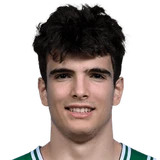

On Thursday, he shared his gratitude for the overlapping year he shared with Brown.
“Jaylen is a Celtics legend, and everybody, [starting with me], is really, really grateful because of the things he has done,”

3 quotes from Hugo Gonzalez about 3 other people around the NBA, newest first. Each one links to its original source.
On Thursday, he shared his gratitude for the overlapping year he shared with Brown.
“Jaylen is a Celtics legend, and everybody, [starting with me], is really, really grateful because of the things he has done,”
Celtics on CLNS: Hugo Gonzalez on playing with Tatum for the first time:
“He was looking great. He was looking amazing. We all knew he was gonna come back at a super great level ... At that practice, I don't know if he made 30 points. I'm sure he did. I was lucky he was on my team.”
Celtics rookie Hugo Gonzalez when asked how he became such a great defender:
“Well…I would say Jalen Brunson dropped 30 points today. So it's not the day to say that I'm a great defender.”